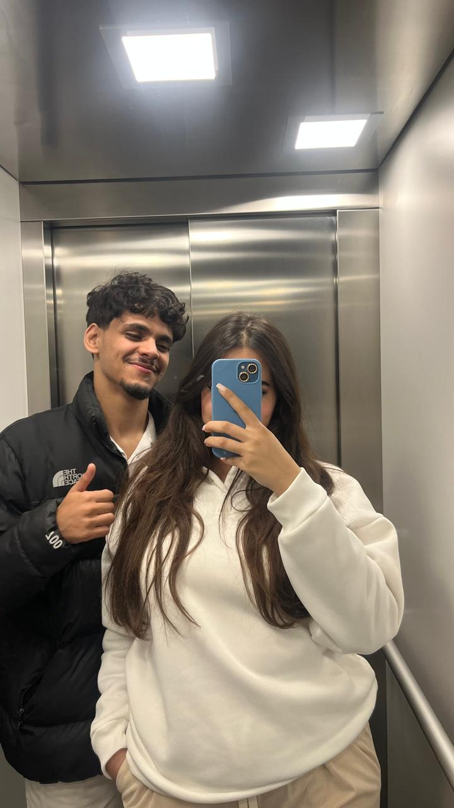
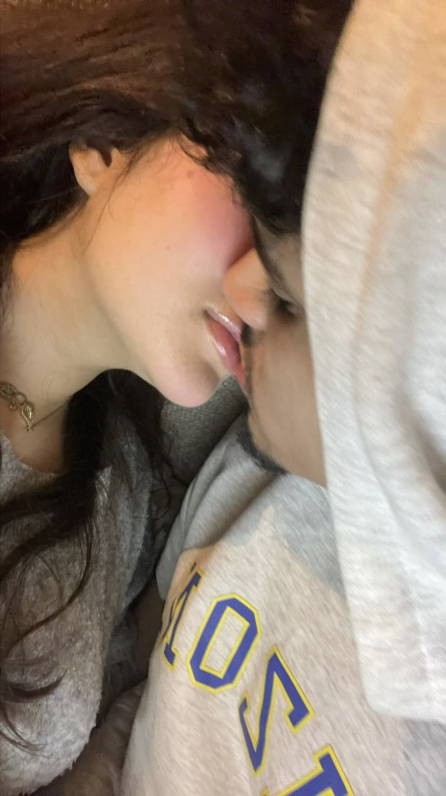
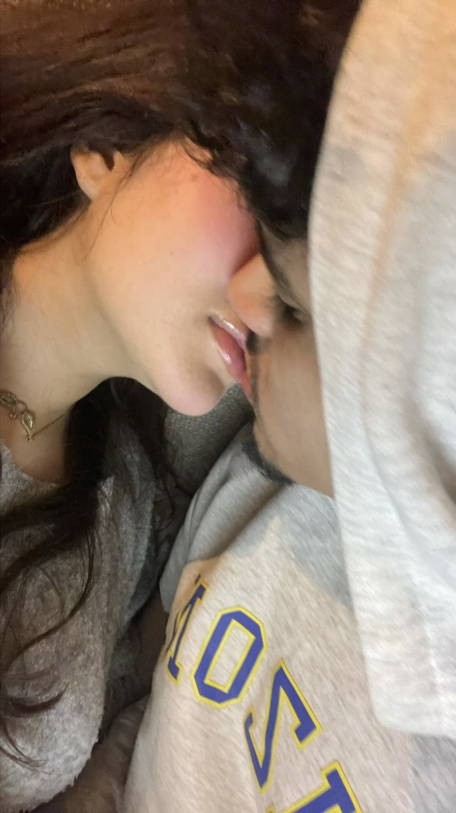

When Heaven Fell to Earth
It feels like just yesterday — that moment when everything changed. I was drifting, untethered, caught in a fog of questions with no answers. Life felt like a blurred sketch of chaos — nothing made sense, and nothing seemed right. I was lost… not just in place, but in purpose. And then, there was you. Out of nowhere — as if the universe grew tired of watching me wander — you appeared. Not walked in, not arrived… appeared. Like something divine had cracked the sky open just enough to let you fall through. An angel. I remember the day so clearly, though I once thought it unremarkable. Just another dumb, aimless day. I had a joint in one hand and emptiness in the other. But the moment I looked into your eyes, the haze cleared. The smoke, the noise, the weight — all of it disappeared. It was as if my soul had been sleeping until it saw you… and suddenly, it remembered how to feel. Something inside me shifted, quietly but completely. I didn’t know what it was then — only that I had to follow it. A few days later, I quit my job, not for logic or reason, but because every part of me was screaming that my place was wherever you were. And I did. Because some people walk into your life. But you... you walked into my destiny.
 
